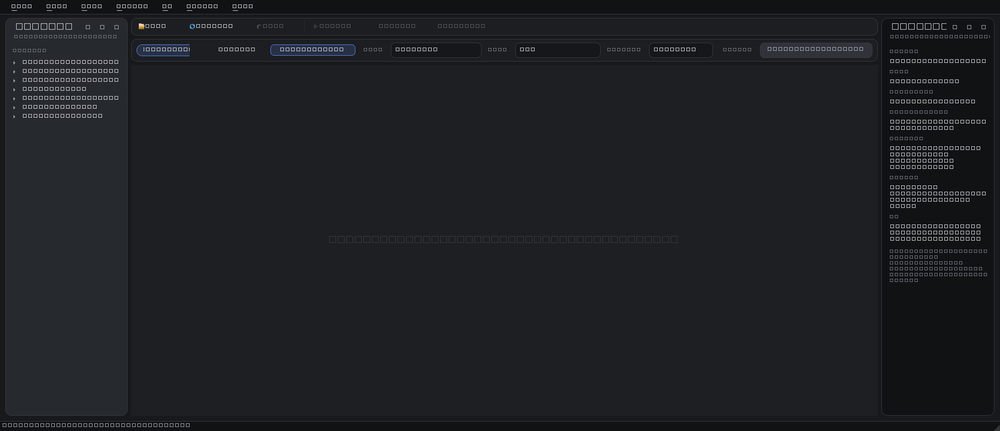
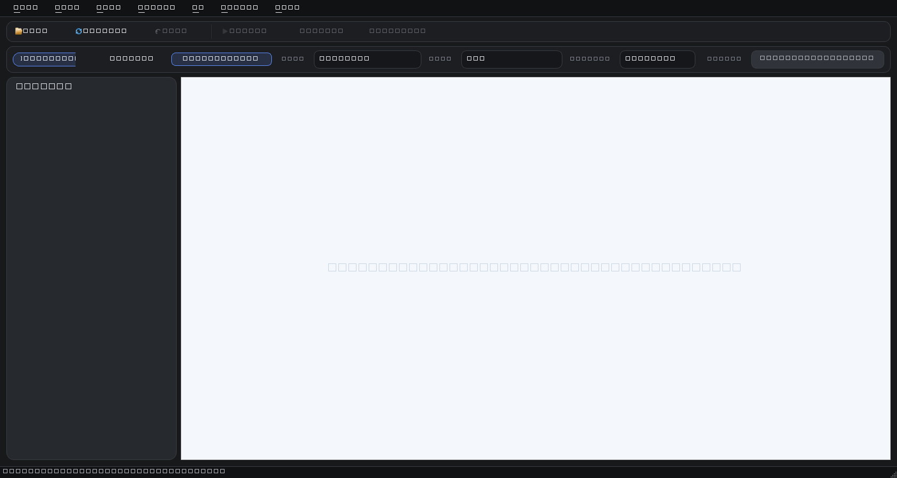

Fast culling controls
Accept, reject, rate, tag, move, and delete from the keyboard without changing context.

Local-first desktop culling
Review huge folders, compare near-duplicates, mark keepers, and use optional local AI without handing your library to a cloud service.
Review flow
Image Triage is tuned for the repetitive part of image work: opening a folder, scanning quickly, comparing similar shots, and preserving the choices you make along the way.
Load a working folder and keep navigation visible.
Scroll fast with cached thumbnails and async previews.
Check exposure brackets, duplicates, and close alternates.
Mark keepers, reject misses, rate, tag, move, or export.

Accept, reject, rate, tag, move, and delete from the keyboard without changing context.
Warm-start folder scans and disk thumbnail caches help repeat sessions open faster.
Preview and compare modes keep EXIF details and file actions close to the image.
Optional local AI
The app can install local runtime packages and model assets for DINO prefiltering, CLIP scoring, and TOPIQ quality checks. They are optional downloads so the core installer stays lean.
Installers
Use the Windows MSI for normal installs and updates. Use the Linux AppImage when you want a portable build that can be placed in your local applications folder.